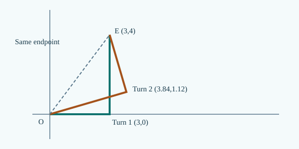

This is original candidate teaching, not an independently reviewed textbook or an authenticated exam question. The three worked-example tiers are not approved QRT demand bands.
1. Observe and establish a reference
A delivery robot leaves a gate and returns to it after taking several turns. The final position is the same as the initial position, but the wheels have travelled a nonzero distance. The two quantities answer different questions.
Use the fixed origin, metre scale and sign convention from M01. Choose east as positive unless stated otherwise. This lesson uses straight-line motion and includes all turns when calculating an exact route length.
2. Build and justify the model
A signed position change is determined by the initial and final points alone. Distance depends on the route: every piece of actual motion contributes a nonnegative length. Break a straight route at each real reversal, not just at each convenient recording time. Adding signed changes cancels intermediate positions, whereas adding their magnitudes preserves travel. The triangle inequality establishes the endpoint lower bound. If the logger records only some checkpoints, the sum of successive absolute changes is itself a lower bound; an unobserved turn can add distance without changing any sampled position. If motion is monotone between checkpoints, the bound is attained. This distinction matters when interpreting logs, inferring unknown turning positions, or testing claims about an incomplete journey.
For a route through x₀, x₁, …, xₙ, each signed change is xᵢ₊₁−xᵢ. Adding changes cancels intermediate coordinates, leaving xₙ−x₀. Adding absolute changes instead gives the actual distance when each leg is monotone. A reversal between recorded samples can increase distance without altering these readings.
The first inequality is an equality if there are no hidden reversals between samples; the second is an equality if the whole journey is monotone. Distance is nonnegative; displacement is signed in the chosen axis.
Derivation in three steps
- Write successive signed changes between recorded positions. Each change is an endpoint difference in one frame.
- Add signed changes for displacement and magnitudes for minimum path length. Intermediate positions cancel in the signed sum; each actual segment contributes nonnegative length.
- Determine whether all reversals are known before treating the bound as equality. Unobserved out-and-back motion adds distance without changing sampled endpoints.
3. Worked examples
Problem: A walker goes from x=−3 m to x=5 m without reversing.
Reasoning: Δx=+8 m, distance=8 m.
Independent check: A monotone straight trip attains the bound.
Problem: A robot records x=2,9,4 m with monotone legs.
Reasoning: Δx=+2 m; D=7+5=12 m.
Independent check: D≥|Δx| and the turn is included.
Problem: Only x=0 and x=6 m are recorded. Construct routes of 6 m and 14 m.
Reasoning: Direct 0→6 gives 6 m. Route 0→10→6 gives 10+4=14 m. Both have Δx=+6 m.
Independent check: The observations alone do not fix total path.
4. When the model works — and when it does not
- Finite position samples alone generally give only a lower bound.
- An exact upper bound cannot be inferred without additional restrictions on unobserved motion.
Diagnostic: Compare a direct route and a detour with identical recorded endpoints.
Repair: Use the sum of absolute sampled changes as a lower bound unless monotone legs are guaranteed.
5. Test your understanding
A robot samples x=3,−2,7 m. Find displacement and the minimum compatible distance.
Reveal textbook explanation
Δx=+4 m; minimum 14 m. Signed sum −5+9=4; magnitude sum 5+9=14, attained by monotone legs.
You can now recover displacement from endpoints, determine exact distance only when the route is known, and justify a lower bound when turns are unobserved. These distinctions prepare you for M03 average speed and velocity.
Existing Core2 question preparation
Signed and unsigned velocity areas
For positive area P and negative-area magnitude N, displacement is P−N and distance is P+N. A reversal requires splitting at v=0. For example, P=24 m and N=9 m imply +15 m displacement and 33 m distance. The sign of the displacement does not tell you how far the body travelled.
These are links to existing question identities, not reproduced original questions or approved demand classifications.
- NSEJS 2021 Q17 — Rotated coordinate systems and inverse endpoint geometry (PH01 preparation)
- NSEJS 2023 Q60 — Signed graph areas and independent claims (PH01 preparation)
- NSEJS 2024 Q60 — Compare multiple velocity graphs (PH01 preparation)
Complete PH01 question-to-construction map · source and academic HOLD.
R4.2 · Source-led advanced construction
For perpendicular legs a,b, distance=a+b, displacement magnitude=√(a²+b²). If first direction is (c,s), a left turn gives (−s,c), so endpoint is (ac−bs,as+bc). Example: 3 m then 4 m gives length 7 and displacement magnitude 5; reversing the lengths can give the same endpoint with a different orientation. Solve both orders before using an independent turn observation.

6. Apply your reasoning in M02 Core1B
Three fresh, separate protected practice tasks cover MODEL, REPRESENT and SYNTHESIZE (proposed D3.4, D3.5 and D3.6). They are not the worked examples above.
Latest candidate: four protected tasks; historical practice remains below with prior attempts intact.
Open M02 Core1B →Prerequisite · M01 Core1ANext Core1A · M03Science and source custody
Original instructional examples and original figure. Source-scope candidate; NO_QUALIFIED_SOURCE_YET. Independent scientific/QRT/B1–B7 and release reviews HOLD.